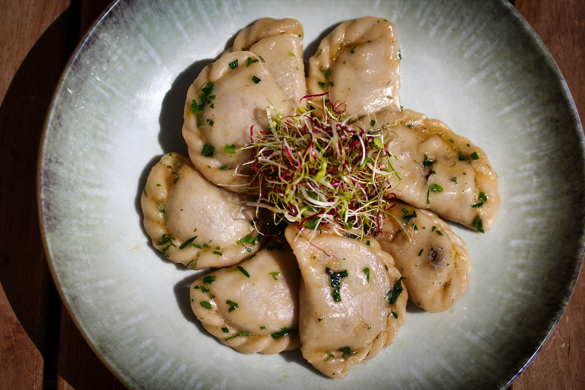
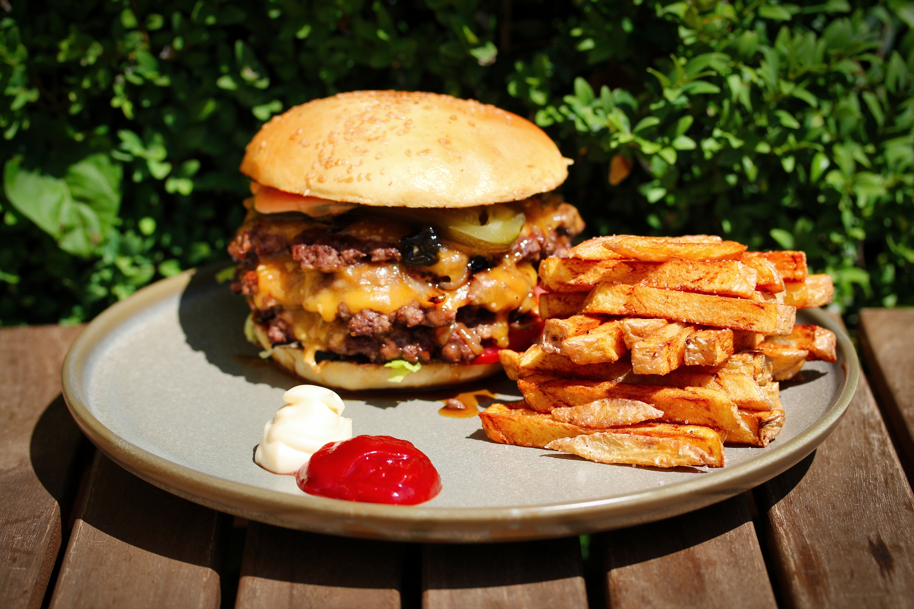
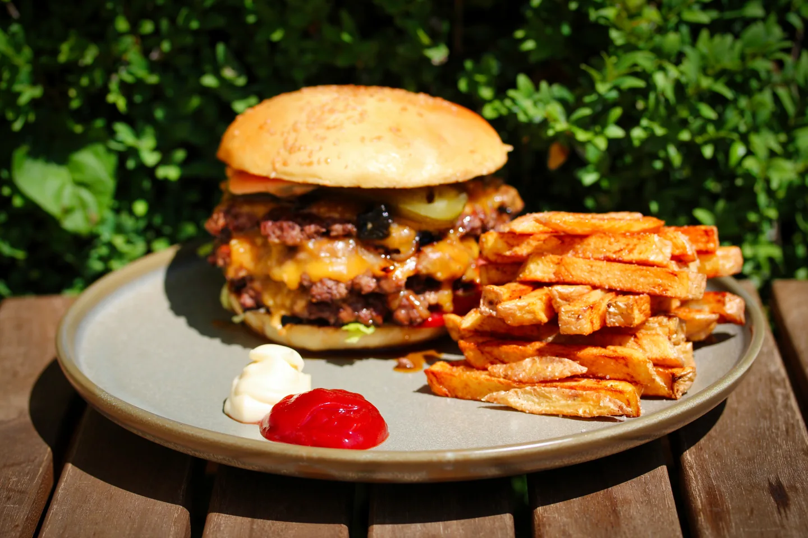
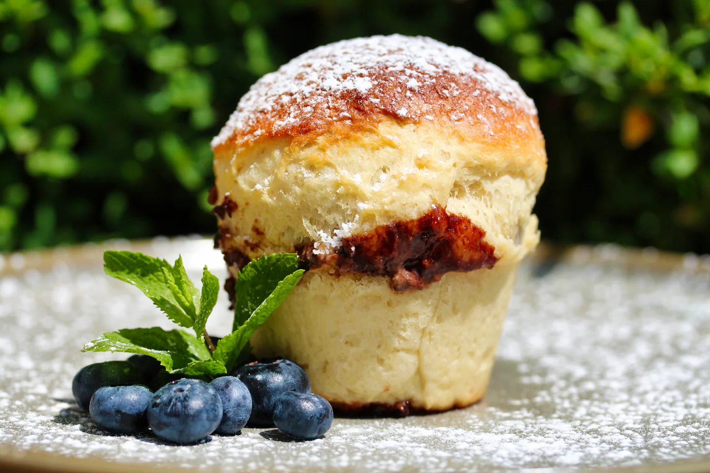
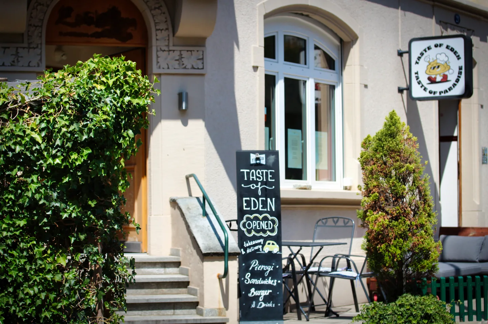

TASTE OF EDEN · ST. GALLEN
Essen, das in
Erinnerung bleibt.
Pierogi · Burger · Desserts
UNSERE AUSWAHL
Für jeden Moment
etwas Gutes.
Pierogi, Burger, hausgemachte Desserts und Getränke. Die neu gesetzte Speisekarte ansehen – einzelne Angaben und Preise bleiben bis zur Bestätigung durch den Betrieb offen.

Pierogi
Mehrere Füllungen auf der fotografierten Karte.

Burger & Pommes
Auswahl rund um die EdenSmash-Burger.

Desserts
Zum Beispiel der Briochemuffin.
EINBLICKE
Taste of Eden in Bildern.
Aufnahmen aus dem für dieses Projekt bereitgestellten Bildmaterial: Speisen, Getränke und der Restauranteingang.

OF
EDEN
ÜBER UNS
Gutes Essen.
Ein guter Moment.
Hier kann der Betrieb später seine eigene Geschichte erzählen. Für diese Vorschau bleibt der Text bewusst kurz und ohne ungeprüfte Aussagen über Herkunft, Herstellung oder Auszeichnungen.
LIEFERSERVICE & TAKE-AWAY
Lieber gleich bestellen?
Die Bestellung öffnet die Taste-of-Eden-Seite bei Just Eat in einem neuen Tab.
Bei Just Eat bestellenRECHTLICHE ANGABEN
Impressum
Die bekannten Firmen-, Register- und Kontaktdaten sind eingetragen. Der heutige Betreiber muss ihre Zuordnung und Aktualität vor offizieller Freigabe bestätigen.
Impressumsentwurf ansehen